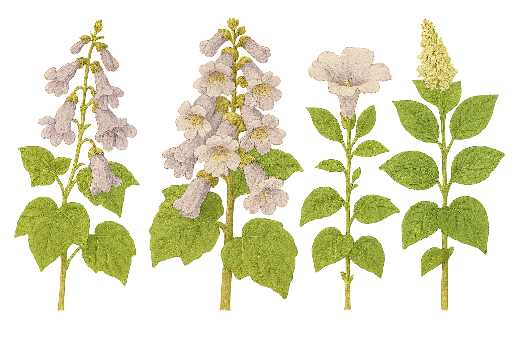

Paulowniaceae
Empress Tree Family / Princess Tree Family
Paulowniaceae is a small family of flowering plants in the order Lamiales, consisting of a single genus, Paulownia, with about 6-17 species (species delimitation is debated). These plants are fast-growing deciduous trees native to East Asia, characterized by their large, opposite leaves and showy, tubular, violet flowers borne in large panicles in spring. They are widely cultivated for timber and ornamental purposes but can be invasive in some regions.
Overview
The Paulowniaceae family contains only the genus Paulownia, commonly known as empress trees or princess trees. Native to China and other parts of East Asia, these trees are remarkable for their extremely rapid growth rate, particularly in juvenile stages, making them valuable for timber production (often marketed as "Kiri wood") and biomass, as well as reforestation efforts in some contexts.
They are easily recognized by their very large, opposite, heart-shaped leaves (especially on young growth) and spectacular displays of large, fragrant, pale violet, foxglove-like flowers borne in upright terminal panicles before or as the leaves emerge in spring. The fruit is a distinctive pointed, woody capsule containing numerous tiny, winged seeds.
Historically, Paulownia was often placed in the families Scrophulariaceae or Bignoniaceae based on morphological similarities. However, molecular phylogenetic studies have shown it represents a distinct lineage within the order Lamiales, leading to the establishment of the separate family Paulowniaceae. Its closest relatives are now considered to be within Orobanchaceae. While valued economically and ornamentally, some species, notably Paulownia tomentosa, have become invasive weeds in certain areas (like the eastern USA) due to their rapid growth and prolific seed production.
Quick Facts
- Scientific Name: Paulowniaceae Nakai
- Common Name: Empress Tree Family, Princess Tree Family, Kiri Tree Family
- Number of Genera: 1 (Paulownia)
- Number of Species: Approximately 6-17 (taxonomy varies)
- Distribution: Native to East Asia (China, Korea, Vietnam, Laos); widely cultivated and naturalized elsewhere.
- Evolutionary Group: Eudicots - Asterids - Lamiids - Lamiales
Key Characteristics
Growth Form and Habit
Fast-growing deciduous trees, capable of reaching significant size. They possess the ability to resprout vigorously from roots or cut stumps.
Leaves
Leaves are very large (especially on young, vigorous shoots), arranged oppositely on the stem (sometimes whorled in threes on young growth). They are simple, broadly ovate or typically heart-shaped (cordate) at the base, with margins entire or sometimes shallowly 3-5 lobed. Leaves are often densely covered with branched or unbranched hairs (pubescent), especially on the undersurface. Stipules are absent.
Inflorescence
Inflorescences are large, upright, terminal panicles or thyrses, developing in the autumn and flowering in spring, usually before or concurrently with leaf emergence. Bracts are present.
Flowers
Flowers are large, showy, fragrant, and distinctly zygomorphic (bilaterally symmetrical).
- Calyx: Campanulate (bell-shaped), 5-lobed, fused (gamosepalous), thick, leathery, densely hairy (often rusty-brown tomentose), and persistent in fruit.
- Corolla: Tubular-campanulate, bilabiate (two-lipped) with 5 lobes (typically 2 upper lobes, 3 lower lobes). The corolla tube is broad. Color is typically pale violet or lavender to white, often with yellow nectar guides or spots inside the tube.
- Androecium: Stamens are 4, inserted on the corolla tube, and didynamous (arranged in two pairs of unequal length - 2 long, 2 short). Anthers open by longitudinal slits. A fifth, sterile stamen (staminode) is sometimes present but small.
- Gynoecium: The ovary is superior, composed of 2 fused carpels forming 2 locules. Placentation is axile, with numerous ovules per locule. A single slender style terminates in a usually bilobed stigma.
Fruits and Seeds
The fruit is a dry, ovoid or pear-shaped, pointed, woody loculicidal capsule that persists on the tree through winter before splitting into two valves to release seeds. The capsule contains numerous (hundreds to thousands) very small, light seeds, each surrounded by a membranous wing aiding in wind dispersal.
Chemical Characteristics
Plants contain various secondary metabolites, including iridoid glycosides (common in Lamiales) and phenylpropanoid glycosides such as verbascoside (acteoside).
Field Identification
Identifying Paulownia trees (Paulowniaceae) is relatively straightforward, especially using a combination of features:
Primary Identification Features
- Habit: Fast-growing deciduous tree.
- Leaves: Very large, opposite, simple, heart-shaped (cordate), often densely fuzzy/hairy.
- Flowers: Large, showy, fragrant, zygomorphic, tubular-bell-shaped, pale violet/lavender, borne in large upright panicles in spring (often before leaves).
- Fruit: Pointed, woody, ovoid capsule (persists on tree), splitting into two valves.
- Seeds: Numerous, tiny, winged.
Secondary Identification Features
- Calyx: Persistent, 5-lobed, densely hairy, often rusty-brown, visible on developing flower buds and surrounding the base of the fruit.
- Stamens: 4, didynamous (2 long, 2 short).
- Bark: Generally smooth and gray on younger trees.
- Growth Rate: Exceptionally rapid growth, especially on young trees or sprouts.
Seasonal Identification Tips
- Spring: Most conspicuous during flowering, with large panicles of violet flowers often appearing before the leaves fully expand.
- Summer: Very large, opposite, heart-shaped leaves are prominent.
- Fall: Leaves drop; developing or mature woody capsules become more visible. Flower buds for the next spring are often present in terminal panicles.
- Winter: Bare branches with persistent, pointed woody capsules and fuzzy flower bud panicles are characteristic.
Common Confusion Points
- Catalpa (Bignoniaceae): Also has large, opposite or whorled, heart-shaped leaves and showy flowers in panicles. However, Catalpa flowers are usually white with yellow/purple markings, have only 2 fertile stamens (plus staminodes), and the fruit is a very long, slender, bean-like capsule (not a short, woody, ovoid capsule).
- Lamiaceae (Mint Family - some large members): Some large mints might have opposite leaves, but typically have square stems, strongly aromatic foliage, and different flower/fruit structures (often small flowers with nutlets).
- Verbenaceae (Vervain Family): Some tropical trees have opposite leaves, but flower and fruit structures differ.
Field Guide Quick Reference
Look For:
- Tree habit (fast-growing)
- Leaves: Large, opposite, heart-shaped, fuzzy
- Flowers: Large, zygomorphic, violet/lavender, tubular, in panicles (spring)
- Stamens: 4 (didynamous)
- Fruit: Woody, pointed capsule (persistent)
- Seeds: Tiny, winged
Key Distinctions:
- Opposite, heart-shaped leaves (vs. Catalpa often whorled)
- Violet, zygomorphic flowers (vs. Catalpa usually white)
- 4 fertile stamens (vs. Catalpa 2)
- Woody ovoid capsule (vs. Catalpa long bean-like capsule)
- Single genus: Paulownia
Notable Examples (Species of Paulownia)
All species belong to the genus Paulownia. Species identification can be difficult, but some commonly encountered ones include:

Paulownia tomentosa
Empress Tree / Princess Tree
Native to China, this is the most widely cultivated and naturalized species globally. Known for its dense covering of hairs (tomentose) on leaves, petioles, and inflorescences. Flowers are typically pale violet with yellow stripes inside. It is considered invasive in many areas, particularly eastern North America.

Paulownia elongata
(Elongated Paulownia)
Native to China, this species is valued in plantations for its particularly rapid growth and relatively straight trunk, making it suitable for timber production. It often has less dense hair cover than P. tomentosa and slightly more elongated leaves and inflorescences.

Paulownia fortunei
Fortune's Paulownia / Dragon Tree
Native to China and Vietnam, this species is also cultivated for timber. It can be distinguished by its generally whiter flowers and capsules that are often more elongated or narrowly ovoid compared to P. tomentosa. Leaves may be less hairy.
Phylogeny and Classification
Paulowniaceae belongs to the large order Lamiales, which is nested within the lamiid clade of asterids. This order includes many familiar families like Lamiaceae (mints), Verbenaceae (vervains), Plantaginaceae (plantains), Scrophulariaceae (figworts), Bignoniaceae (trumpet creepers), and Orobanchaceae (broomrapes).
The phylogenetic placement of Paulownia was uncertain for a long time. Based on its zygomorphic flowers and capsular fruit, it was often included in Scrophulariaceae or sometimes Bignoniaceae. However, molecular phylogenetic studies demonstrated that it does not belong to either of those families in their modern, narrower circumscriptions. Instead, Paulownia represents a distinct lineage that diverged relatively early within Lamiales. Current evidence suggests its closest relative is the large parasitic family Orobanchaceae, although it forms its own separate family, Paulowniaceae.
Position in Plant Phylogeny (APG IV)
- Kingdom: Plantae
- Clade: Angiosperms (Flowering plants)
- Clade: Eudicots
- Clade: Asterids
- Clade: Lamiids
- Order: Lamiales
- Family: Paulowniaceae
Evolutionary Significance
Paulowniaceae, despite being monogeneric, is significant for:
- Phylogenetic Placement: Its unique position within Lamiales, separate from Scrophulariaceae and Bignoniaceae where it was traditionally placed, highlights the power of molecular data in resolving complex relationships within large orders. Its link to Orobanchaceae is particularly interesting given the vast difference in life strategy (free-living tree vs. parasites).
- Life History Strategy: Represents an extreme example of rapid growth and reproduction (r-strategy) within a tree lineage, associated with disturbance or early successional habitats.
- Biogeography: Its native range restricted to East Asia, contrasted with its successful cultivation and naturalization worldwide, provides case studies in plant introduction and invasiveness.
- Wood Anatomy: Possesses lightweight but relatively strong wood, an adaptation related to its fast growth.